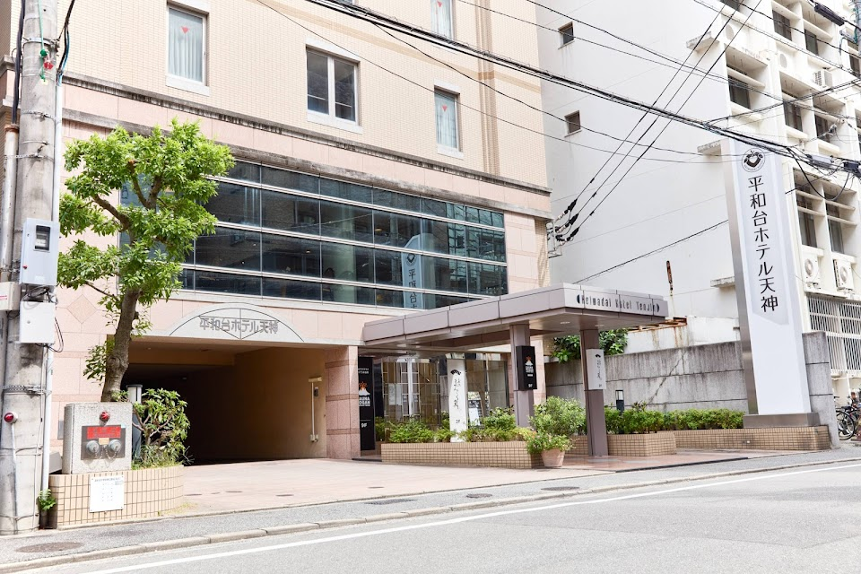

이 호텔은 안전·동선 관련 불만이
후쿠오카 평균보다 3.0배 많아요!

위치
1 Chome-5-6 Maizuru, Chuo Ward, Fukuoka, 810-0073 일본 · 1박 약 5만원 (10만원 미만 가격대)
이 호텔에서 실망할 확률
8%
후쿠오카 평균(12%)보다 안심할 수 있는 수준이에요
최근 투숙객 100명 중 8명이 심각한 문제를 언급했어요
최근 투숙객 100명 중 8명이 심각한 문제를 언급했어요
우수
평균 12%
위험
최근 리뷰일수록 높은 가중치로 반영됩니다
분석 리뷰 122건 · 기준 2026년 3월
분석 리뷰 122건 · 기준 2026년 3월
카테고리별 위험도
후쿠오카 평균 = 50 · 3배 나쁘면 100
헤이와다이호텔 텐진
후쿠오카 평균
리스크 상세 분석
대분류 6개 · 소분류 20개 전체 — 숫자는 위험도(0~100), 후쿠오카 평균이면 50이에요
🧼위생 경보
양호 · 위험도 30 · 후쿠오카 상위 25%
양호평균 50위험
-
침구/바닥 청결얼룩 · 머리카락 · 먼지23
-
청소 서비스청소 불량 · 쓰레기 방치29
-
해충/곰팡이벌레 · 빈대 · 곰팡이43
👂오감 지옥
주의 · 위험도 58 · 후쿠오카 하위 25%
양호평균 50위험
-
벽간/외부 소음옆방 소리 · 도로 소음61
-
악취 역류하수구 · 담배 · 곰팡내47
-
기기 소음에어컨 · 냉장고 소음65
🏚️시설 사기단
주의 · 위험도 57 · 후쿠오카 하위 21%
양호평균 50위험
-
공간/노후화비좁음 · 낡은 시설62
-
냉난방/수압냉난방 불량 · 수압 약함30
-
네트워크/TV와이파이 · TV 불량27
🗺️동선 파괴자
위험 · 위험도 80 · 후쿠오카 하위 12%
양호평균 50위험
-
역/거점 접근성역에서 멀다 · 찾기 어려움100
-
지형적 난관언덕 · 계단35
-
주변 편의성편의점 · 식당 없음47
-
허위 위치 정보위치 정보 불일치0건13
💬불친절 레이더
양호 · 위험도 36 · 후쿠오카 상위 30%
양호평균 50위험
-
응대 태도불친절 · 무시19
-
처리 지연체크인 지연 · 대기53
-
사후 대처보상 거부 · 무대응16
-
소통 불가언어 소통 문제0건13
🔒안전 그림자
위험 · 위험도 100 · 후쿠오카 하위 5%
양호평균 50위험
-
보안 시설도어락 · CCTV100
-
주변 치안밤길 · 우범지대65
-
사생활 보호방음 · 프라이버시65
위험 70+주의 45~70양호 ~45
불만 리뷰 5건 미만 소분류는 위험 등급을 붙이지 않아요 · 인용문은 리뷰 원문 발췌입니다
구글 별점 분포
최근 1년 2점 이하 리뷰 비율은 4% 입니다.
총 163건
- 1점3%
- 2점4%
- 3점22%
- 4점34%
- 5점36%
리뷰
심각도 · 최신순
이런 호텔은 어떠세요?
비슷한 가격대·가까운 위치에서 실망 확률이 낮은 순이에요